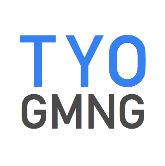

遊びながらイベントを企画していく TYO GMNG

常日頃からあつまって遊び、どんな企画をしたらさらに気持ちのいいゲーム体験ができるのかを求めていきたい。
TYO というのは東京を表すIATA都市コード（International Air Transport Association airport code）空港のように世界中から人々があつまりクロスしてまた拡散していく、そのためのイベントプラットフォームグループを目指します。
発足人である TRS はコーヒー、映画、アートを通ってからゲーミングの魅力に気がつき、ゲーマーそれぞれが好きなこととゲームがつながることで、ゲーム体験がさらに豊かになるのではないかと考えるに至りました。
目標
- ゲーム体験をよりよくする
- ゲーム体験とゲーマーの多様性を広げる
- ゲームとゲーム以外をつなげていく
活動内容
- ゲームをたのしむ
- ゲーミングを通じてゲームの可能性をひろげる企画を開発、運営する
- ゲームとゲーム以外をクロスさせ、"体験"そのものを拡張する
プレイするゲームはメンバーにあわせたものとなります。
募集要件
以下に共感していただける方
- ゲームが好きで、ゲーマー、デベロッパー、パブリッシャーなどゲーム全体の動きや流れに興味を持てる
- 社会一般的な常識を守り行動できる
- ゲーム以外の物事にも興味があり、それらをゲームにつなげる可能性を考えられる
興味をもたれた方は Twitter もしくは Discordまでご連絡ください。最初に教えてほしいことは以下になります。
SNSアカウント:
プレイ中のゲーム:
ゲーム以外に好きなこと:
よろしくおねがいします。